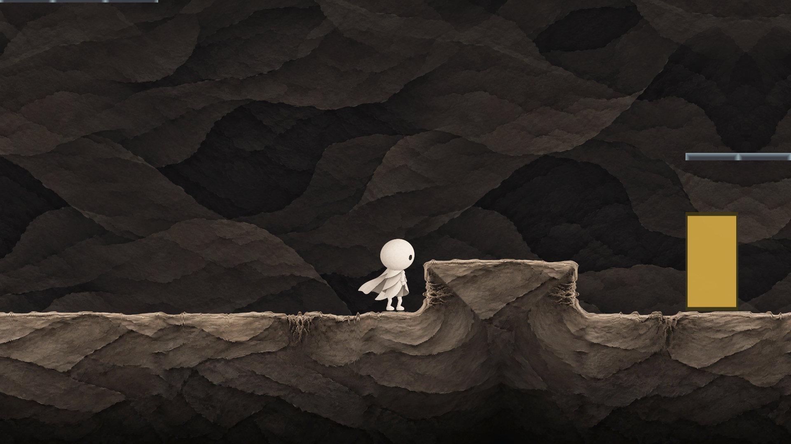

<!doctype html>
<html lang="ko"><meta charset="utf-8"><meta name="viewport" content="width=device-width,initial-scale=1">
<title>종이 플레이어 C · 애니메이션</title>
<style>
*{box-sizing:border-box}body{margin:0;background:#171c24;color:#e5e2da;font:15px/1.6 system-ui,sans-serif}main{max-width:1120px;margin:auto;padding:32px}h1{font-size:25px;font-weight:550;margin-bottom:4px}p{color:#a5acb7;margin-top:0}.layout{display:grid;grid-template-columns:minmax(260px,1fr) 300px;gap:28px;margin-top:24px}canvas{width:100%;background:#353b47;border-radius:16px}button,select{background:#29313e;border:1px solid #4a5463;color:#ddd;border-radius:8px;padding:10px;cursor:pointer;font:inherit}button[aria-pressed=true]{border-color:#d5cbb2;background:#4b4d4b}.states{display:grid;grid-template-columns:1fr 1fr;gap:7px}.controls{display:flex;gap:8px;margin:16px 0}small{color:#a5acb7}img{width:100%;border-radius:12px;margin-top:20px}a{color:#d6cfb9}@media(max-width:720px){.layout{grid-template-columns:1fr}main{padding:18px}}
</style><main>
<h1>종이 플레이어 C</h1><p>둥근 실루엣 · 짧은 팔다리 · 뒤따라 휘어지는 종이 망토</p>
<div class="layout"><section><canvas id="view" width="576" height="576"></canvas><div class="controls"><button id="pause">일시 정지</button><button id="flip">좌우 반전</button><select id="speed"><option value="1">정상 속도</option><option value="0.5">0.5배속</option><option value="0.25">0.25배속</option></select></div><small id="status"></small></section><aside><div class="states" id="states"></div><p style="margin-top:18px">Unity가 렌더링한 60fps 프레임입니다. 동작을 선택하면 다시 재생됩니다. 일회성 동작은 끝 자세를 잠시 유지한 뒤 반복합니다.</p><small>공격은 맨손 동작 시안이며 무기·타격 판정은 아직 연결하지 않았습니다. 피격·쓰러짐은 미리보기용 클립입니다.</small></aside></div>
<p>실제 Unity 장면 · 이동과 충돌 크기 유지</p>
</main><script>
const names=['Idle','Walk','Run','RunStart','RunStop','Jump','AirRise','AirApex','AirFall','Land','Dash','WallSlide','Turn','Attack1','Attack2','Attack3','Hurt','Death'];
const labels=['대기','걷기','달리기','달리기 시작','멈추기','점프 시작','상승','정점','낙하','착지','대시','벽 미끄러짐','방향 전환','공격 1','공격 2','공격 3','피격','쓰러짐'];
const counts=[120,60,48,12,18,10,30,24,48,18,12,60,12,30,34,40,24,75];const loops=new Set(['Idle','Walk','Run','AirRise','AirApex','AirFall','WallSlide']);
const canvas=document.getElementById('view'),ctx=canvas.getContext('2d'),images=names.map(name=>{let im=new Image();im.src='sheets/'+name+'.png';return im});
let current=0,time=0,last=performance.now(),paused=false,flip=false;const buttons=[];
names.forEach((name,i)=>{const b=document.createElement('button');b.textContent=labels[i];b.setAttribute('aria-pressed',i===0);b.onclick=()=>{current=i;time=0;buttons.forEach((x,j)=>x.setAttribute('aria-pressed',i===j))};document.getElementById('states').append(b);buttons.push(b)});
document.getElementById('pause').onclick=e=>{paused=!paused;e.target.textContent=paused?'재생':'일시 정지'};
document.getElementById('flip').onclick=()=>flip=!flip;
function draw(now){if(!paused)time+=Math.min((now-last)/1000,.1)*Number(document.getElementById('speed').value);last=now;const n=counts[current],period=n+(loops.has(names[current])?0:30),f=Math.min(Math.floor(time*60)%period,n-1),im=images[current];ctx.clearRect(0,0,576,576);if(im.complete&&im.naturalWidth){ctx.save();if(flip){ctx.translate(576,0);ctx.scale(-1,1)}ctx.drawImage(im,(f%8)*192,Math.floor(f/8)*192,192,192,0,0,576,576);ctx.restore()}document.getElementById('status').textContent=labels[current]+' · '+(f+1)+' / '+n+' 프레임 · 60 fps';requestAnimationFrame(draw)}requestAnimationFrame(draw);
</script></html>
